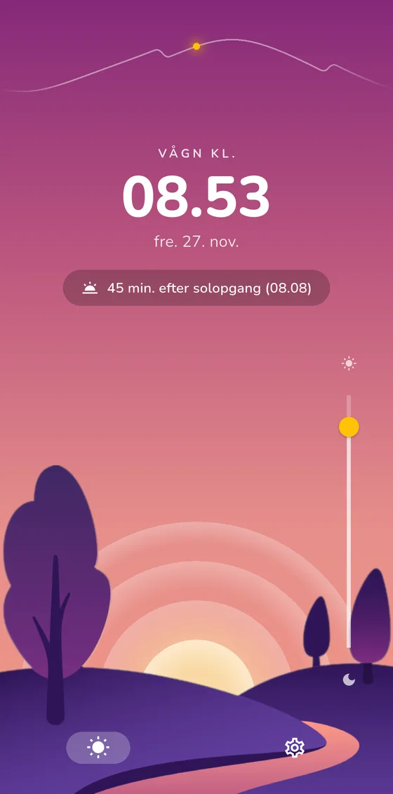

Solopgangen flytter sig en smule hver dag. Det bør din alarm også gøre. Wake at Sunrise beregner morgendagens solopgang for netop din placering og ringer præcis da – eller de minutter før eller efter, der passer dig.

Sådan virker det
Appen skal vide, hvor på Jorden du vågner. Det er det eneste, den beder om – og det bliver på din telefon.
Ring præcis ved solopgang eller nogle minutter før eller efter. Vælg, hvilke ugedage alarmen er slået til.
Hver nat retter alarmen stille og roligt sig selv ind efter morgendagens solopgang. Når daggryet glider gennem året, glider dit vækketidspunkt med.
Funktioner
Én opgave – at vække dig ved daggry – udført omhyggeligt.
Ikke et gennemsnit for byen – det faktiske solopgangstidspunkt der, hvor din telefon er, beregnet på enheden med astronomisk matematik.
Fortæl den, hvor meget søvn du vil have, og hvor lang tid du skal bruge på at falde til ro. Den regner baglæns fra morgendagens solopgang og giver dig et skub, så du kommer i seng til tiden.
En graf over solopgangens forskydning hen over hele året – med et punkt på i dag – så du ved, hvad dine morgener går i møde.
Ringer hen over låseskærmen, overlever genstarter og kan tilsidesætte systemets lydstyrke, så en telefon med lav lydstyrke ikke betyder en forsømt morgen.
Ingen vejrtjeneste, ingen server. Solopgangen beregnes lokalt, så alarmen virker i flytilstand og langt fra alfarvej.
Fuldt oversat, og snoozetid, lydstyrke og ugedage kan alle indstilles.
Privatliv
Den eneste tilladelse af betydning, appen beder om, er placering – og den bruges til præcis én ting: at beregne solopgangen, hvor du er.
Tidlig adgang
Wake at Sunrise starter snart en lukket beta på Android. Meld dig ind i testergruppen, så får du installationslinket, så snart den åbner.
Meld dig ind i testergruppenGratis, intet at købe. Brug den Google-konto, du vil installere med – det er sådan, Google Play ved, at den skal vise dig appen.
Tidlig adgang
Wake at Sunrise er i lukket beta på Android. To hurtige trin, så er den din – din feedback former lanceringen.
Google Play skal have din konto på testerlisten, før den viser dig appen. Allerede medlem? Spring videre til trin 2.
Meld dig ind i gruppenÅbn dette på den telefon, du vil teste med, logget ind med den samme Google-konto.
Åbn testen på Google PlayDet er gratis at teste, og der er intet at købe. Behold gerne appen installeret i et par uger – Google tæller vedvarende testere, før en ny app må gå live.
Download
Wake at Sunrise er på Google Play. Gratis, ingen reklamer, ingen konto.
Hent den på Google PlayTidlig adgang
Wake at Sunrise er ved at afslutte en lukket beta på Android. Vil du være med? Send en kort mail, så får du linket.
Bed om linket til betaen